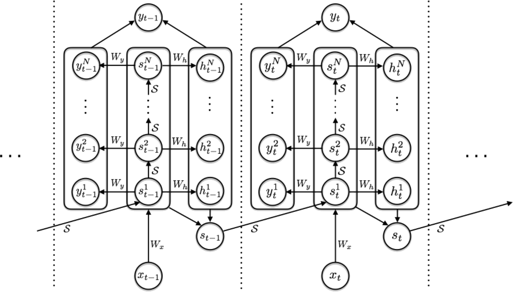
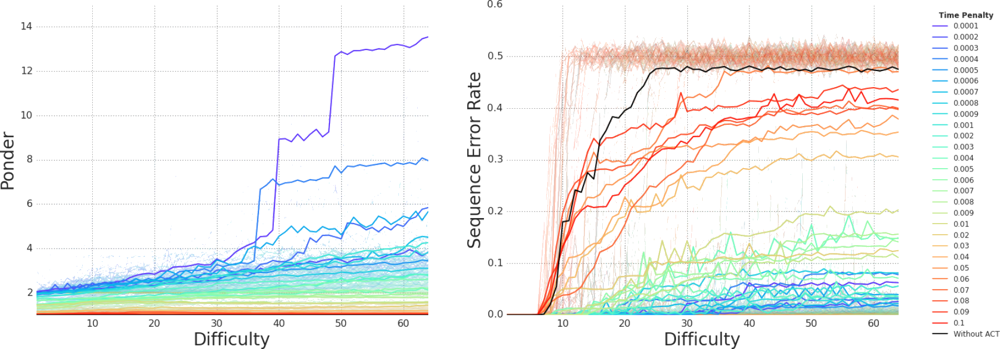
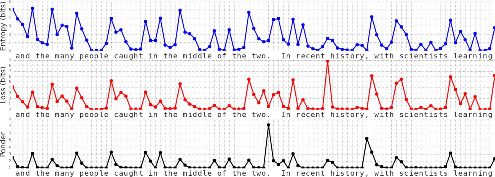
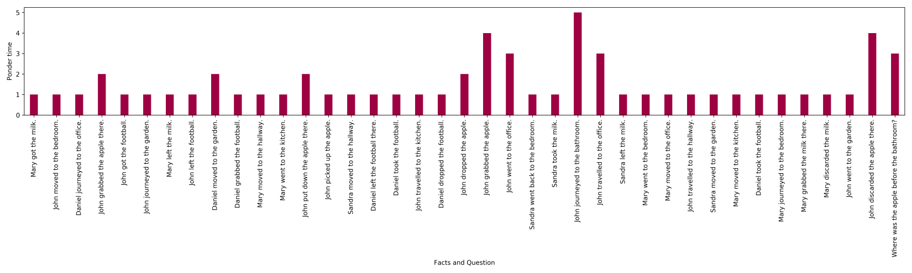
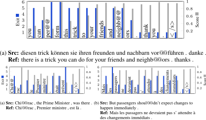
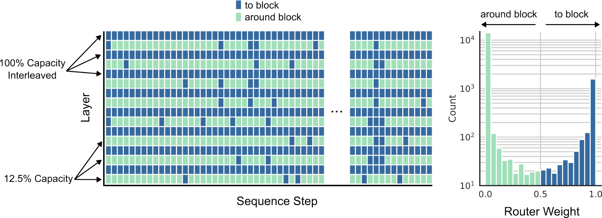

Lecture 3 · Fixed Points, Feedback, and Adaptive Computation
Adaptive Computation:
Halting, Routing, and Dynamic Depth
When should a network stop thinking? Architectures that learn how much computation
to spend per input or token — via halting mechanisms, weight-sharing with adaptive
depth, and dynamic routing under fixed FLOP budgets.
presented by
Sergey Plis


Course Arc
The unifying theme of this course is replacing fixed-depth feed-forward computation with iterative, stateful computation — whether via recurrence, equilibrium solving, adaptive depth, explicit memory, or learned test-time updates — so that models can allocate effort where it is needed.
L1
Preliminaries
L2
Fixed points
L3
Adaptive depth
L4
Introspection
L5
Memory
L6
Learned update rules
Roadmap
-
Motivation
Why fixed-depth computation is a problem — and what brains do instead
-
Adaptive Computation Time
Learning when to stop: the halting mechanism (Graves, 2016)
-
Universal Transformer
Shared weights + per-token halting in attention (Dehghani et al., 2019)
-
From Halting to Routing
Depth-Adaptive Transformer, Mixture-of-Depths, and fixed-budget compute
-
Connections & Open Problems
DEQs, MoE, calibration, and the bridge to introspection (L4)
Motivation
Why Should Computation Be Adaptive?
The Fixed-Depth Problem
Easy input
Layer 1
↓
Layer 2
↓
⋮
↓
Layer N
Hard input
Layer 1
↓
Layer 2
↓
⋮
↓
Layer N
A 96-layer Transformer spends the same compute predicting "the" as it does predicting a rare technical term.
Human Brains Are Not Fixed-Depth
-
Multi-circuit neurons: the same cortical neurons participate in multiple distinct functional circuits and intrinsic networks — neural "weight sharing" across tasks
Sporns (2011); Bassett & Sporns (2017)
-
Bypass mechanisms: some stimuli trigger rapid responses through shortcut pathways (amygdala fast pathway for threat), while complex stimuli require multi-stage cortical processing
LeDoux (1996); Pessoa & Adolphs (2010)
-
Effort scales with difficulty: fMRI shows that harder reasoning tasks recruit more widespread cortical activation and sustain it longer
Duncan (2010); Fedorenko et al. (2013)
Neural Multiplexing
- The same neurons engage in different circuits at different times — forming task-specific functional networks dynamically
- This is remarkably similar to weight-shared architectures (Universal Transformer, RBP) where the same parameters are reused across "depth"
- Unlike fixed feed-forward nets, the brain does not dedicate separate hardware to each processing stage — it recycles
"The brain's 'layers' are not a pipeline — they are a recurrent, adaptive, depth-varying computation."
This lecture: architectures that bring this flexibility to neural networks.
Two Questions for This Lecture
When to stop?
Learn a halting signal that decides how many computation steps each input needs.
ACT · UT · PonderNet
Where to route?
Learn which tokens pass through which layers, under a fixed FLOP budget.
DAT · Mixture-of-Depths
L2's RBPs answered "when to stop" implicitly — iterate until convergence.
This lecture makes the decision explicit and learnable.
This lecture makes the decision explicit and learnable.
Motivation Wrap-Up
- Fixed-depth networks waste compute on easy inputs and undercompute on hard ones
- Brains multiplex neurons, route adaptively, and scale effort with difficulty
- Two axes: adaptive depth (how many layers) and adaptive width (which sub-networks)
- This lecture focuses on depth — from halting to routing
Next: the mechanism that started it all — Adaptive Computation Time.
Adaptive Computation Time
Learning When to Stop
The Core Idea
An RNN that applies the same transition function multiple times per input, with a learned halting probability at each "ponder" step.

- At each time step $t$, the network iterates internally for $N(t)$ sub-steps
- $N(t)$ is not fixed — it is determined by a learned halting unit
- The network is unrolled in depth, not just in time
The Halting Mechanism
At ponder step $n$ of time step $t$, compute a halting probability:
$$h_t^n = \sigma\!\left(W_h \, s_t^n + b_h\right)$$
Accumulate into a running sum:
$$H_t^n = \sum_{k=1}^{n} h_t^k$$
Define the total steps $N(t)$ as the first step $n$ where $H_t^{n} \geq 1 - \epsilon$, and halt.
Compute the remainder:
$\quad R_t = 1 - \sum_{k=1}^{N(t)-1} h_t^k$
Deterministic + differentiable: no sampling, no REINFORCE — just a sigmoid and an accumulator.
Weighted Output
The final state is a weighted combination of all ponder states:
$$\bar{s}_t = \sum_{n=1}^{N(t)} p_t^n \cdot s_t^n$$
where the weights are:
$$p_t^n = \begin{cases} h_t^n & \text{if } n \lt N(t) \\ R_t & \text{if } n = N(t) \end{cases}$$
The network doesn't just decide when to stop — it interpolates over its intermediate states.
The halting weights $p_t^n$ sum to 1 by construction.
The Ponder Cost
Without a penalty, the network would always ponder maximally.
$$\mathcal{L} = \mathcal{L}_{\text{task}} + \tau \cdot \rho(t)$$
where the ponder cost is:
$$\rho(t) = N(t) + R_t$$
- $\tau$ is a hyperparameter trading accuracy for compute
- Small $\tau$ → more pondering, higher accuracy
- Large $\tau$ → fewer steps, faster but less accurate
- This is a surrogate for a computational budget — not a hard constraint
ACT Pseudocode
def ACT_step(x_t, s_prev, W_h, b_h, τ_max):
"""One time step of an ACT-augmented RNN."""
H = 0.0 # cumulative halting probability
s_bar = 0 # weighted output state
n = 0
while H < 1 - ε:
n += 1
s_n = RNN_cell(x_t, s_prev if n == 1 else s_n)
h_n = σ(W_h @ s_n + b_h) # halting probability
if H + h_n ≥ 1 - ε or n == τ_max: # halt
R = 1 - H # remainder
s_bar += R * s_n
break
else:
H += h_n
s_bar += h_n * s_n
ponder_cost = n + R # for the loss penalty
return s_bar, ponder_cost
Synthetic Tasks: Ponder Time Adapts

- Parity, logic, integer addition, sorting — ACT dramatically outperforms fixed-depth
- Key observation: ponder time scales with input difficulty
- Longer bit strings → more ponder steps; harder sorting instances → more steps
Language Model: Where Compute Goes

- Ponder time spikes at spaces, punctuation, and rare transitions
- Correlates with prediction loss and entropy — the network thinks harder when it's uncertain
- Suggests ACT learns a form of implicit difficulty estimation
ACT: Strengths and Limitations
Strengths
- Simple, deterministic, differentiable
- Interpretable ponder maps
- Minimal architectural changes to the base RNN
- Direct compute–accuracy tradeoff via $\tau$
Limitations
- $\tau$ is sensitive and requires tuning
- Halting distribution can collapse — always using ~same steps
- No probabilistic model of halting — just a threshold
- Ponder penalty is a crude surrogate for computational budget
Can we do better? PonderNet offers a probabilistic fix…
PonderNet: A Probabilistic Twist
Key change: model halting as a geometric-like distribution over ponder steps.
$$p(\text{halt at step } n) = \lambda_n \prod_{k=1}^{n-1}(1 - \lambda_k)$$
where $\lambda_n = \sigma(W_h s_n + b_h)$ — same halting unit as ACT.
- Training: KL divergence between the learned halting distribution and a geometric prior
- Replaces $\tau$ with a prior distribution — more principled regularization
- At inference: sample or take the mode of the halting distribution
The Thread
- ACT (2016): deterministic threshold — "halt when accumulated probability hits 1"
- PonderNet (2021): probabilistic model — "sample from a learned halting distribution"
- Both: the network decides when to stop — variable compute, no hard budget
- Coming next: what if we flip the question? Instead of "when to stop," ask "which tokens need which layers" — under a fixed budget
But first: what happens when we transplant ACT into the Transformer?
Universal Transformer
Weight-Sharing + Halting in Attention
Dehghani et al., "Universal Transformers" (2019)
From Stacked to Shared Layers
Standard Transformer
Layer 1 (θ₁)
↓
Layer 2 (θ₂)
↓
Layer 3 (θ₃)
↓
Layer L (θ_L)
L distinct parameter sets
Universal Transformer
Step 1 (θ)
↓
Step 2 (θ)
↓
Step 3 (θ)
↓
Step T (θ)
1 shared parameter set, T applications
- UT = Transformer body applied recurrently over depth (+ step embeddings)
- This is literally a weight-tied deep network — an RNN over depth
Per-Position Adaptive Halting

- ACT halting applied independently at each position in the sequence
- Different tokens halt at different depths — function words early, content words later
- The result: a ragged depth profile across the sequence
Turing Completeness
- Standard Transformers are not Turing-complete — they are bounded-depth circuits
- UT with ACT = Transformer + recurrence + conditional halting
- Under standard computability assumptions, UTs are Turing-complete
- Intuitively: unbounded depth + halting condition = ability to simulate any computation
A theoretical advantage, not always a practical one — but it means UTs can in principle generalize to arbitrary-length inputs, while standard Transformers cannot.
UT Results Highlights
- LAMBADA (word prediction): new SOTA at publication — UT outperforms standard Transformers and LSTMs
- Algorithmic tasks (copying, reversing): standard Transformers fail on OOD lengths, UTs generalize
- WMT14 En-De translation: +0.9 BLEU over vanilla Transformer
- Subject–verb agreement: UT matches or beats Transformer across all attraction distances
The win is primarily on generalization beyond training distribution — exactly what adaptive depth promises.
UT ↔ RBP: The Same Idea?
UT with infinite shared steps → weight-tied infinite depth → converge to a fixed point:
$$\vec{z}^* = f_\theta(\vec{z}^*, \vec{x})$$
This is a Deep Equilibrium Model (L2)!
RBP (L2)
Implicit depth: solver decides convergence
Constant memory via implicit differentiation
UT + ACT (L3)
Explicit depth: halting network decides
O(depth) memory — stores all ponder states
Same spirit, different mechanism. Both break fixed-depth — RBP via convergence, UT via learned halting.
From Halting to Routing
Adaptive Compute Under Fixed Budgets
The Pivot
- ACT / UT: variable total compute — the network decides how long to run
- Problem: total FLOPs are unpredictable → hard to deploy with latency guarantees
- New question: what if we fix the total FLOP budget but let the network choose where to spend it?
- This reframes adaptive computation from halting to routing
Depth-Adaptive Transformer
Each layer $\ell$ has an exit classifier that can emit a prediction:
$$\hat{y}_\ell = \text{Classifier}_\ell(h_\ell)$$
- Unlike UT: layers are not shared — each layer is a different function
- The model learns both different representations and when to exit
- Exit policy options: per-sequence confidence threshold, per-token decisions, or aligned training where all classifiers produce good predictions
- At inference: exit early when confidence is high enough
DAT: Results

- IWSLT German–English: matches baseline Transformer accuracy
- Uses less than 25% of decoder layers on average
- Most tokens exit very early — only a few need full depth
Mixture-of-Depths
Fix the total compute budget. Let the network learn which tokens pass through each layer.
● Each layer has capacity of $k$ tokens (set a priori)
● A lightweight router scores all tokens: $r_i = W_r \cdot h_i$
● Only top-$k$ tokens pass through self-attention + MLP
● Rest skip via residual: $h_i^{\ell+1} = h_i^{\ell}$
MoD: The Key Insight
"The compute budget is fixed, but its allocation is learned."
- Unlike ACT: no halting penalty — the budget constraint is architectural
- Unlike DAT: the decision is per-layer, per-token, not just early exit
- Tokens that skip a layer still contribute their residual — they aren't dropped
- Static compute graph + known tensor sizes → hardware-friendly
Think of it as: "Mixture-of-Experts applied to layers rather than sub-networks."
MoD: Results

- Matches baseline performance with a fraction of FLOPs per forward pass
- Up to 50% faster at inference (post-training sampling)
- Later layers are more selective — "easy" tokens are consistently routed around
- Learns sensible routing without explicit difficulty labels
Halting vs. Routing: Comparison
| ACT | Universal Transformer | Depth-Adaptive | Mixture-of-Depths | |
|---|---|---|---|---|
| Base arch. | RNN | Transformer | Transformer | Transformer |
| Shared layers? | Yes (RNN cell) | Yes | No | No |
| Compute budget | Variable (+ τ) | Variable (+ τ) | Variable (exit) | Fixed (top-k) |
| Decision type | Halting prob. | Halting prob. | Exit classifier | Router score |
| Granularity | Per time step | Per position | Per token/seq | Per layer × token |
| Differentiable? | Yes | Yes | Yes | Yes (STE) |
The Adaptive Computation Landscape
Connections & Open Questions
A Taxonomy of Adaptive Depth
Implicit ← depth decision → Explicit
Fixed ← compute budget → Variable
RBP
ACT / UT
PonderNet
DAT
MoD
Adaptive Depth vs. Adaptive Width
Adaptive Depth
Choose how many layers each token passes through.
ACT · UT · DAT · MoD
Adaptive Width
Choose which sub-network (expert) processes each token.
Mixture-of-Experts (MoE)
- These are complementary axes of the same idea: allocate compute where needed
- MoD ≈ "MoE applied to layers rather than sub-networks"
- They can be composed — adaptive depth and width simultaneously
The RBP Connection (Revisited)
-
RBP (L2): implicit adaptive depth — iterate until convergence to $\vec{z}^* = f(\vec{z}^*, \vec{x})$
✓ Constant memory ✓ No halting hyperparameter ✗ Needs convergence guarantees
-
ACT / UT: explicit adaptive depth — learn a halting distribution
✗ O(depth) memory ✗ Tunable τ ✓ Direct compute–accuracy control
-
MoD: explicit routing — fixed budget, dynamic allocation
✓ Predictable FLOPs ✓ Hardware-friendly ✗ No convergence guarantees
All three break the fixed-depth paradigm — each with a different tradeoff between guarantees, control, and efficiency.
Bridge to L4: Confidence and Introspection
-
CALM (Schuster et al., 2022): early-exit inference for LLMs
The network estimates its own confidence to decide whether to exit early
- But confidence estimation requires the network to introspect — to model its own uncertainty
- This is exactly L4's theme: networks that look at their own internal states to decide what to compute next
- L4 goes further: MIND and SELF-Transformer don't just decide whether to keep computing — they decide what to compute
Takeaways
- Adaptive depth replaces fixed compute — ACT/UT learn per-input halting; the network decides when to stop.
- Routing flips the question — DAT and MoD ask which tokens need which layers under a fixed FLOP budget.
- Implicit vs explicit depth control — RBP (L2) converges to equilibrium; ACT/UT learn a halting signal.
- Depth and width are orthogonal axes — adaptive depth composes with adaptive width (MoE), and L4 adds introspection.
Readings
Core
- Graves (2016) — ACT: learnable halting for RNNs
- Dehghani et al. (2019) — Universal Transformer: shared layers + ACT halting
- Elbayad et al. (2020) — Depth-Adaptive Transformer: early-exit classifiers
- Raposo et al. (2024) — Mixture-of-Depths: top-k routing per layer
Optional
- Shazeer et al. (2017) — MoE: adaptive width via routing
- Banino et al. (2021) — PonderNet: probabilistic halting
- Figurnov et al. (2017) — Spatially Adaptive Computation Time
- Schuster et al. (2022) — CALM: confidence-based early exit